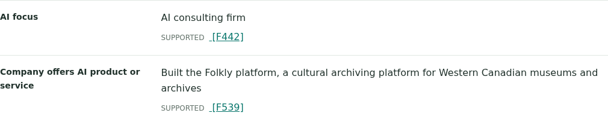

ProjectClarity · Agentic research in practice
One research question became an evidence-linked list of companies, their locations and their AI products and services.
The task: “List Canadian technology startups focused on building AI products and/or services.”
Toronto · Biomedical AI
AI that helps researchers identify antibodies, reagents and experimental discoveries.
Company + evidence →Toronto · Autonomous trucking
AI-first autonomous transportation, using simulation-driven machine learning.
Company + evidence →Toronto · Enterprise AI
Large language models and generative AI for business applications.
Company + evidence →Examples from the saved report: technology companies with Canadian-location and AI-offering evidence. The full report retains citations and fields needing further review.
It followed discoveries—not just the initial search
The agent followed the Folkly profile and found evidence linking the archiving platform to Calgary-based ORKA AI. This demonstrates autonomous follow-up, not AI-product qualification.

Source profile → Creator evidence + Location evidence + Creator–product connection → Report entry
The engineering behind the useful result
1. Follow the evidence.
Rank discovered links, visit selected destinations and feed new knowledge into the same report.
2. Preserve the trail.
Keep source references beside each finding so a reviewer can inspect how the answer was assembled.
3. Bound the work.
Use concurrent batches, request budgets and saved results to handle larger tasks and recover useful work.
Evaluation and lessons learned →
Static report and presentation: no API key needed. The detailed case study covers source quality, duplicates, qualification gaps and model usage.
Collected: 14 parsed documents · 1,221 retained extraction records · two research rounds.
Delivered: 49 cited report rows, including the company examples shown here, for human review.